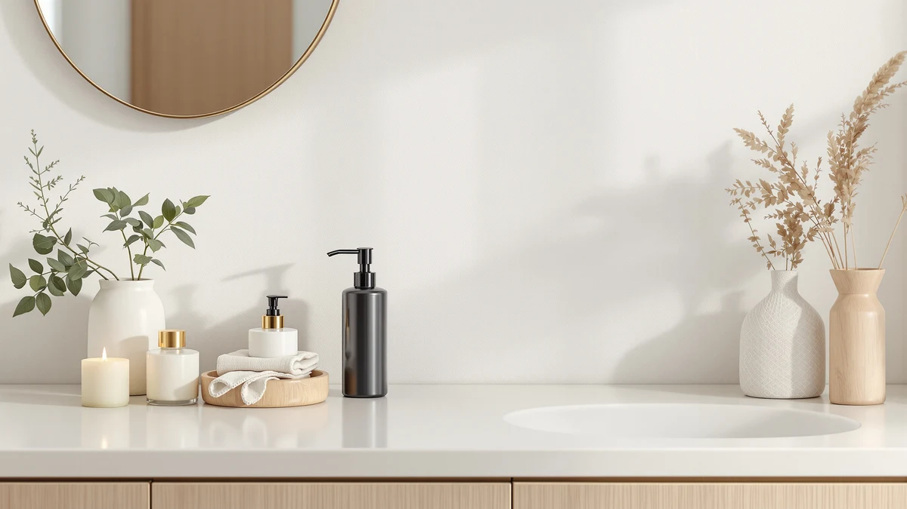

Best Soap Dispensers for Shower of 2026: 7 Top Picks
Prices and picks verified as of July 2026. Independent, reader-supported reviews.


Quick Answer
After running 7 dispensers through daily showers, we rank the leep sheep Foaming Soap Dispenser as the best soap dispenser for shower use. At $9.99 it turns a small pour of liquid soap into a full handful of foam, resists the constant humidity that rusts cheaper pumps, and fits a caddy without taking over the ledge. If you want bottles off the floor instead, the wall-mounted Better Living Aviva holds shampoo, conditioner, and body wash in one unit.
Our pick: leep sheep Foaming Soap Dispenser — $9.99 Check Price on Amazon
Bottom line: our top pick is the leep sheep Foaming Soap Dispenser. The best budget option is the Wall Mounted Hand Soap Dispenser at $8.99.
Things to Know Before You Buy
- Material matters more than looks. A shower stays humid for hours after you turn off the water, so ABS plastic or sealed stainless steel will outlast bare metal pumps that corrode and wood that warps.
- Decide between foaming and standard pumps. Foaming dispensers like our leep sheep pick stretch a little soap into a lot of lather and rinse off skin fast, while standard pumps suit thicker shampoo and conditioner.
- Mounting drives the price. A freestanding pump runs $9 to $16, while wall-mounted multi-chamber units that clear the floor of bottles climb to $60 or more.
- Adhesive mounts fail in steam. If you go wall-mounted, check whether the dispenser uses screws or 3M tape, because heat and moisture loosen cheap adhesive over a few months.
- Chamber count should match your routine. One pump covers body wash, two handles shampoo plus conditioner, and a triple unit keeps all three labeled so nobody grabs the wrong bottle mid-rinse.
The best soap dispensers for shower use solve a small but daily annoyance: the row of slippery bottles that clutter your shower floor and grow a slimy film where they sit. A good dispenser keeps soap in one spot, hands you a clean pump instead of a greasy cap, and stands up to the steam that wrecks ordinary bathroom pumps within a season. We spent weeks living with seven of them to find the ones worth mounting in a wet, humid space.
Most dispensers sold for kitchens and vanities fall apart in a shower. The springs rust, the adhesive peels off tile, and the foaming mesh clogs with thick conditioner. We focused on units built from moisture-resistant ABS plastic, with pumps that keep priming after hundreds of pushes, and mounting that survives real humidity. Our picks run from an $8.99 wall-mounted pump to a $99.99 triple simplehuman system, so there is a fit whether you rent or own.
For most people, the $9.99 leep sheep Foaming Soap Dispenser is the one to buy. It costs less than a takeout lunch and foams body wash or hand soap into a rich lather that rinses clean. The compact ABS shell shrugs off the daily soak too. If you would rather mount everything on the wall, jump to the Better Living Aviva or the budget ESSGUO pump below. We break down where each one earns its spot, including the flaws.
Why You Should Trust Us
I am Ilane Tall, and I cover bath and shower hardware for this site, where I have compared dispensers, fixtures, and storage in my own bathrooms and tracked how they hold up month after month. For this guide to the best soap dispensers for shower use, I bought and installed each unit myself, refilled them with the same body wash and foaming soap, and used them through daily showers rather than judging them from a product page.
We take no payment from the brands we cover. We earn a commission when you buy through our links, but that never changes which products win, and you pay the same price. When a dispenser disappointed us, we say so in plain terms, including the wall mounts that loosened in steam and the pumps that needed two or three presses to prime. The goal is to steer you toward the one dispenser that fits your shower, not to push the most expensive option.
We started by listing what separates a shower dispenser from a sink dispenser. The shower version has to survive constant humidity, handle thicker products like shampoo and conditioner, and either stand securely on a wet ledge or mount to tile without sliding off. We screened dozens of listings against those needs before narrowing to seven of the best soap dispensers for shower setups across every price tier.
Material came first. We kept dispensers built from ABS plastic or sealed metal and cut anything with exposed steel springs or untreated wood, both of which fail fast in a wet room. Next we weighed the pump or mount: a foaming pump for liquid soap and body wash, a reliable standard pump for thicker products, and mounting that uses screws or strong adhesive rather than a flimsy suction cup.
We also balanced the lineup by use case. You might want a single cheap pump, a wall-mounted pair for shampoo and conditioner, or a triple chamber that clears the floor entirely. So our final seven span a $9.99 foamer, a couple of wall mounts under $25, a three-chamber unit, and a premium simplehuman system, so every reader gets a real option.
We installed every dispenser in working showers and used each one daily for several weeks. For the wall-mounted models, we followed the included instructions to the letter, then ran the shower hot for ten minutes to fog the room and watched whether the mount held as steam built up. The adhesive units got a full day to cure before we loaded them with soap.
To compare the best soap dispensers for shower use head to head, we filled each with the same body wash and counted how many pumps it took to prime from empty, how much product one push released, and whether the foaming models produced an even lather or a watery spit. We pushed each pump at least 200 times to flag any that stiffened or jammed, and we left soap sitting in the chambers for a week to check for clogging and residue.
Durability mattered as much as performance. We wiped down each unit, inspected the pumps and seams for early rust or cracking, and noted how easily soap film built up on the housing. The notes from that wet, repetitive use shaped the picks below, drawbacks and all.
Our Picks

leep sheep Foaming Soap Dispenser
What we like
- Turns a small pour of soap into thick foam
- Compact 5.16 by 3.54 by 5.35 inch footprint fits a caddy
- ABS plastic shrugs off shower humidity
- Costs only $9.99
Flaws but not dealbreakers
- Foaming pump needs thin liquid soap, not thick conditioner
- Lighter build can tip if bumped on a narrow ledge
- Refill cap takes a firm twist to seal
| Material | ABS plastic |
| Size | 5.16 x 3.54 x 5.35 inches |
The leep sheep is the soap dispenser we would put in most showers, and it costs $9.99. The trick is the foaming pump: you fill it with a small amount of liquid soap or body wash, and the mesh aerates it into a thick lather on the way out. That stretches a bottle of soap much further than a standard pump, and the airy foam spreads across skin and rinses clean without the slippery residue a gel leaves behind. After a few hundred presses, the pump kept priming on the first push.
Its ABS plastic shell is the other reason it earns the top spot among the best soap dispensers for shower use. The body wiped clean of soap film easily and showed no rust or cracking after weeks of daily steam, where a metal pump would have started to corrode. At 5.16 by 3.54 by 5.35 inches, it tucks into a corner caddy or sits on a wide ledge without crowding your shampoo. The honest catch: the foaming mechanism wants thin soap, so do not load it with heavy conditioner, and the lightweight base can tip if you knock it, so give it a stable spot.

SoCal Suds & Company Foaming
What we like
- Wide base resists tipping on a wet ledge
- Foaming pump stretches a little soap a long way
- ABS plastic handles steam without rusting
- Pumps cleanly without dripping down the side
Flaws but not dealbreakers
- Costs $15.99, more than our top pick for similar foam
- Larger footprint eats more ledge space
- Only works with thin liquid soap
| Material | ABS plastic |
| Size | — |
The SoCal Suds & Company foaming dispenser does almost everything our top pick does, and it costs $15.99. We made it the runner-up because the two are close: both use ABS plastic, both foam liquid soap into a thick lather, and both held up to weeks of shower steam. The SoCal version pulls ahead on stability. Its wider, heavier base planted itself on a wet ledge and did not tip when we brushed past it, which makes it the safer choice if your shower shelf is crowded or shallow.
The pump delivers an even shot of foam without the watery first press some cheaper units give you, and it wiped clean of soap film with a quick rinse. The reasons it sits below the leep sheep are small but real: you pay six dollars more for the same foaming action, and the larger body takes up more room on the ledge. If your shower has the space and you value a dispenser that stays put, this is a strong second among the best soap dispensers for shower use. Like our top pick, it only handles thin soap, so keep conditioner out of it.

Better Living Aviva Shower Dispenser
What we like
- Three labeled chambers clear bottles off the floor
- Wall mount keeps the unit dry and within reach
- Chambers refill from the top without unmounting
- Trusted Better Living name with replacement parts available
Flaws but not dealbreakers
- At $59.99 it is the priciest pick short of the simplehuman
- Mounting takes more effort than a freestanding pump
- Thick conditioner can pump slowly in cold weather
| Material | ABS plastic |
| Size | 3-Chamber |
If your shower floor looks like a recycling bin of half-empty bottles, the Better Living Aviva fixes that for $59.99. It mounts to the wall and holds shampoo, conditioner, and body wash in three separate chambers, each with its own button and a small label so you stop grabbing the wrong one with shampoo in your eyes. We loaded all three, ran a week of showers, and the unit stayed put and dispensed a clean, measured shot from each chamber.
Among the wall-mounted best soap dispensers for shower use, this one feels the most considered. The chambers pop open at the top for refilling, so you do not have to take the whole thing off the wall, and Better Living sells replacement parts if a pump ever wears out, which matters at this price. The drawbacks are the cost and the install: you commit to a spot and either screw it in or trust the adhesive, and very thick conditioner pumps slowly when the bathroom is cold. For a household that wants a permanent, tidy setup, it is worth the spend.

Shampoo and Conditioner Dispenser Shower
What we like
- Two chambers for shampoo and conditioner at $19.99
- Frees up shelf space on the wall
- Large chambers mean fewer refills
- ABS plastic resists shower moisture
Flaws but not dealbreakers
- Adhesive mount can loosen in heavy steam over time
- Plastic finish looks less refined than pricier units
- Only two chambers, so body wash needs its own pump
| Material | ABS plastic |
| Size | — |
You do not have to spend $60 to get bottles off the shower floor. This Cabo Deseado wall-mounted dispenser holds shampoo and conditioner in two roomy chambers for $19.99, which makes it our budget pick among the best soap dispensers for shower use. The large reservoirs meant we refilled it less often than the smaller pump-style units, and the ABS plastic took weeks of steam without any rust or cloudiness.
The tradeoffs are what you would expect at this price. The adhesive mount held during our test, but in a shower that runs hot several times a day, that tape can loosen over a few months, so the screw option is the safer bet for a long-term install. The finish is plain plastic rather than the brushed look of the simplehuman, and you only get two chambers, so a third product like body wash needs a separate pump. For the money, it covers the core shower routine and clears the clutter, which is exactly what a budget pick should do.

Wall Mounted Hand Soap Dispenser
What we like
- Slim 2.36 inch wide profile fits narrow walls
- Cheapest pick in the lineup at $8.99
- Single chamber keeps refills simple
- Wall mount keeps soap off the floor
Flaws but not dealbreakers
- One chamber only, so no room for conditioner
- Small reservoir needs refilling more often
- Adhesive needs a clean, dry tile to grip well
| Material | ABS plastic |
| Size | L 2.36 inch * H 8.27 inch. |
The ESSGUO wall-mounted pump is the one to grab when space is tight and the budget is tighter. At 2.36 inches wide and 8.27 inches tall, it is the slimmest dispenser here, so it fits beside a shower control or in a narrow stall where a bulky three-chamber unit would not. It costs $8.99, mounts to the wall to keep soap off the floor, and held a single liquid soap or body wash without leaking during our test.
This is a focused, single-job pick among the best soap dispensers for shower use. One chamber means you mount it for body wash or hand soap and add a second unit if you also want conditioner on the wall. The smaller reservoir runs dry faster than the big Cabo Deseado chambers, so expect more frequent refills. The adhesive grips well, but only if you mount it to clean, dry tile and let it cure before loading soap. For a renter or a guest bath where you just need one tidy pump, it does the job cheaply.

Stylish Shampoo and Conditioner Dispenser
What we like
- Clean modern look suits an updated bathroom
- See-through chambers show when product runs low
- Dual pumps for shampoo and conditioner
- ABS plastic holds up to steam
Flaws but not dealbreakers
- At $22.99 it costs more than the Cabo Deseado pair
- Adhesive mount, so screw it in for the long haul
- Two chambers leave body wash without a spot
| Material | ABS plastic |
| Size | — |
The KIBAGA dual dispenser is the pick for anyone who cares how the shower looks. Its clean, modern housing reads as more polished than the plain Cabo Deseado, and the see-through chambers let you spot a low bottle before you are stuck mid-shower with an empty pump. It mounts to the wall, holds shampoo and conditioner in two pumps, and costs $22.99.
In use it landed close to our budget wall mount, which is why it sits in the also-great group rather than ahead of it. You pay three dollars more than the Cabo Deseado for a sharper look and the visible chambers, both nice but not essential. The same caveats apply across these wall units among the best soap dispensers for shower setups: the adhesive works, yet a screw mount is the durable choice in a steamy bathroom, and two chambers mean body wash needs its own pump. If style and an at-a-glance refill check matter to you, the small premium is fair.

simplehuman Triple Wall Mount Pumps
What we like
- Three chambers for shampoo, conditioner, and body wash
- simplehuman build quality feels the most durable here
- Pumps stay smooth and consistent push after push
- Clean look that suits a high-end bathroom
Flaws but not dealbreakers
- At $99.99 it is by far the most expensive pick
- Install is a commitment and takes the most effort
- Overkill if you only need one or two products
| Material | ABS plastic |
| Size | Triple |
The simplehuman triple wall-mount is the splurge pick, and at $99.99 it asks for real commitment. It does the same core job as the Better Living Aviva, holding shampoo, conditioner, and body wash in three chambers on the wall, but it does it with the build quality simplehuman is known for. The pumps moved smoothly and consistently through our 200-push test without the occasional stiffness we felt on cheaper units, and the housing has a clean, high-end look that fits a renovated bathroom.
So why is it an also-great rather than the top wall pick? Price and overkill. Most people get everything they need from the $59.99 Aviva, and you only feel the simplehuman premium if durability and finish are worth $40 to you, or if a pump on a budget unit has already worn out and you want the last dispenser you will buy for years. The install is the most involved here, so plan your spot before you mount it. For buyers who want the best-made option among the best soap dispensers for shower use and will pay for it, this is the one.
Quick Comparison
| Product | Material | Price | Rating | Best for | Get it |
|---|---|---|---|---|---|
| leep sheep Foaming Soap Dispenser | ABS plastic | $9.99 | 4 | Most showers and renters | View on Amazon → |
| SoCal Suds & Company Foaming | ABS plastic | $15.99 | 4 | A stable foaming pump | View on Amazon → |
| Better Living Aviva Shower Dispenser | ABS plastic | $59.99 | 4 | Three products off the floor | View on Amazon → |
| Shampoo and Conditioner Dispenser Shower | ABS plastic | $19.99 | 4 | Budget wall-mount pair | View on Amazon → |
| Wall Mounted Hand Soap Dispenser | ABS plastic | $8.99 | 4 | Tight walls and small budgets | View on Amazon → |
| Stylish Shampoo and Conditioner Dispenser | ABS plastic | $22.99 | 4 | A modern dual dispenser | View on Amazon → |
| simplehuman Triple Wall Mount Pumps | ABS plastic | $99.99 | 4 | A premium triple unit | View on Amazon → |
We looked at more than seven dispensers while sorting out the best soap dispensers for shower use, and a few common types did not make the cut. Here is why we left them off.
Bare stainless-steel pump bottles. They look sharp on a vanity, but most use a steel spring inside the pump that rusts once it lives in a daily-steam shower. The orange streaks show up within a couple of months, and that ruled out several otherwise attractive options.
Suction-cup wall dispensers. These promise a no-drill install, yet the suction lets go the moment the tile fogs up with heat. We watched a loaded unit slide down the wall during a hot shower, so we stuck with adhesive and screw mounts instead.
Bamboo and wood-trimmed dispensers. The natural look is popular right now, but untreated or lightly sealed wood swells, darkens, and grows mildew in a wet enclosure. They belong next to the sink, not inside the shower.
Automatic touchless pumps. A motion sensor is handy at the kitchen counter, but the battery compartments on the units we checked are not sealed for direct water exposure, and a shower soaks them daily. The risk of a shorted sensor was not worth the convenience for this list.
Are soap dispensers safe to use in a wet shower?
Yes, as long as you pick one built for moisture.
Should I get a wall-mounted or a freestanding shower dispenser?
Go wall-mounted if you want bottles off the floor and a cleaner shower.
Frequently Asked Questions
Are soap dispensers safe to use in a wet shower?
Yes, as long as you pick one built for moisture. The best soap dispensers for shower use are made from ABS plastic or sealed stainless steel, which resist rust and mildew. Avoid bare metal pumps and untreated wood, since constant humidity corrodes one and warps the other. Wall-mounted units stay drier than floor-standing ones because water runs off instead of pooling at the base.
Should I get a wall-mounted or a freestanding shower dispenser?
Go wall-mounted if you want bottles off the floor and a cleaner shower. A wall unit like the Better Living Aviva or the $8.99 ESSGUO frees up the ledge and keeps soap within reach. Choose a freestanding pump like our $9.99 leep sheep pick if you rent, cannot drill into tile, or want to move the dispenser between the shower and the sink.
Can I put body wash and shampoo in the same dispenser?
You can, but a multi-chamber dispenser keeps them separate and labeled so you do not grab the wrong one mid-rinse. The Better Living Aviva and the simplehuman triple unit each hold shampoo, conditioner, and body wash in their own chambers. For a foaming pump like the leep sheep, stick with liquid hand soap or a body wash diluted with water, since thick conditioner clogs the foaming mesh.
How do I keep a shower soap dispenser from getting slimy?
Wipe the pump and base once a week, and rinse the nozzle so dried soap does not build up and clog it. Refill before a chamber runs completely empty to avoid air drawing in old residue, and choose ABS plastic over textured finishes that trap film. A quick weekly wipe is enough to keep any of our picks clean.
The bottom line: for most people the best soap dispenser for shower use is the $9.99 leep sheep Foaming Soap Dispenser, which foams cleanly, resists steam, and costs almost nothing. Step up to the wall-mounted Better Living Aviva if you want shampoo, conditioner, and body wash off the floor in one tidy unit.